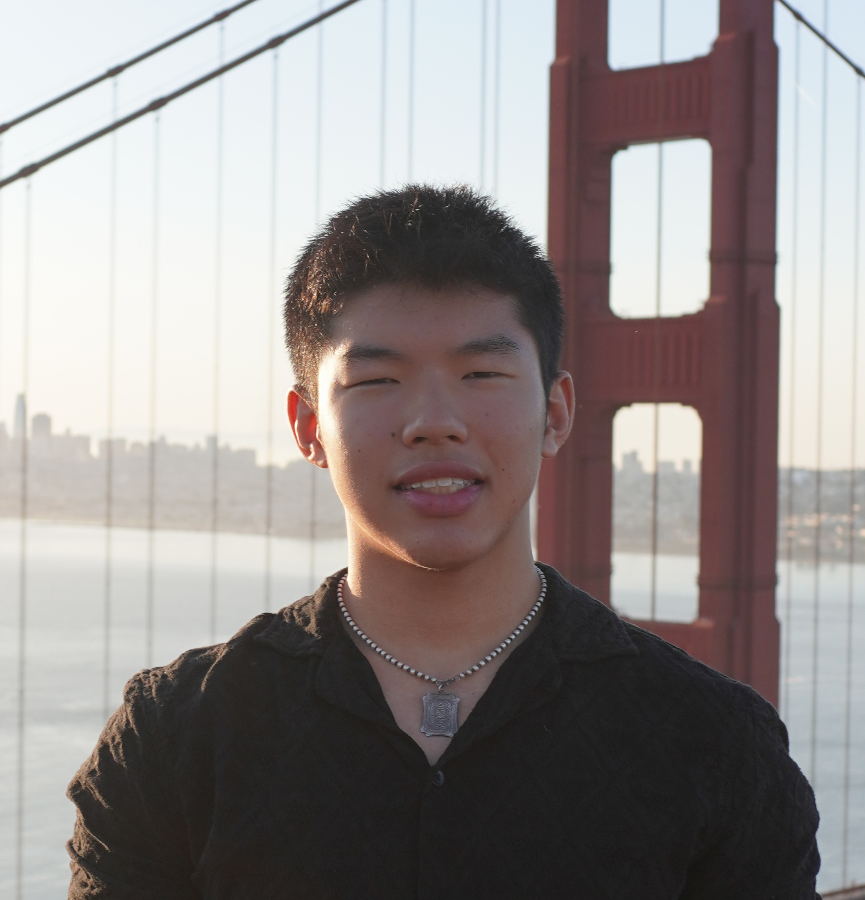

Data Analytics & Software Dev
I am currently a freshman at the University of Michigan–Ann Arbor pursuing a dual major in Computer Science and Economics, alongside a minor in Data Science. I am passionate about bridging the gap between this generation's growing, uncapitalized data and actionable analytics. My focus is on data analytics and data engineering, with a strong interest in software development. This is my personal website, where I share my projects and experiences.
Apart from engineering, I love endurance running, lifting, and reading, specifically biographies and autobiographies on founders and innovators of all backgrounds.

Projects
View projects →
Experience
View experience →